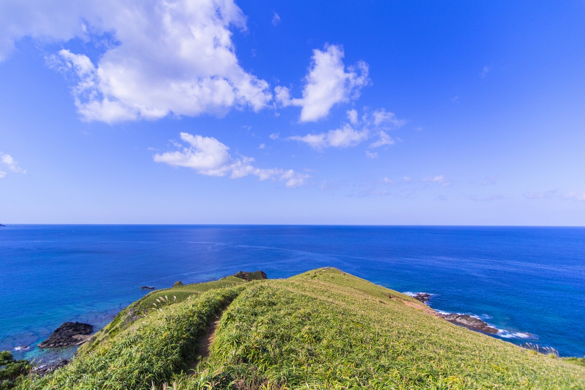
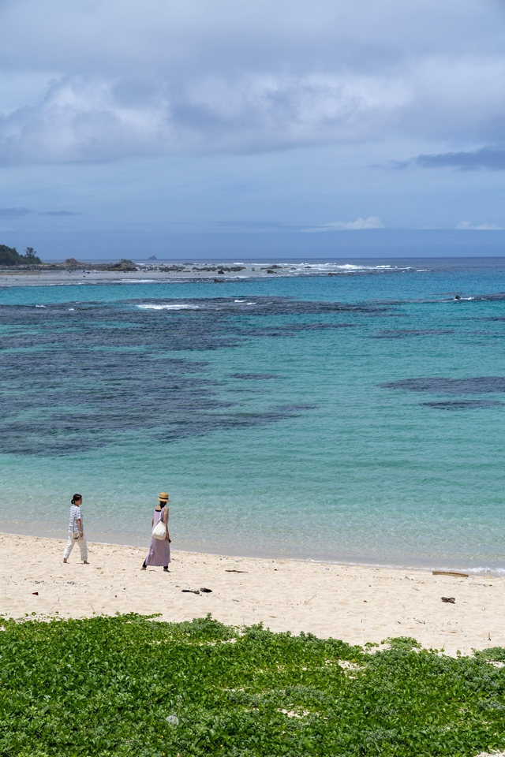
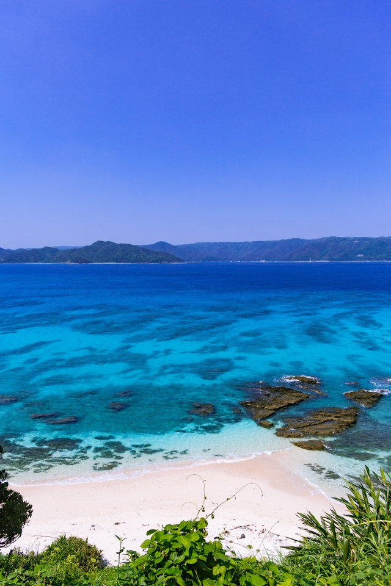
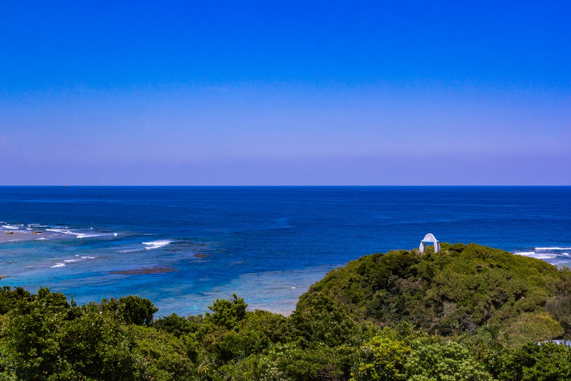
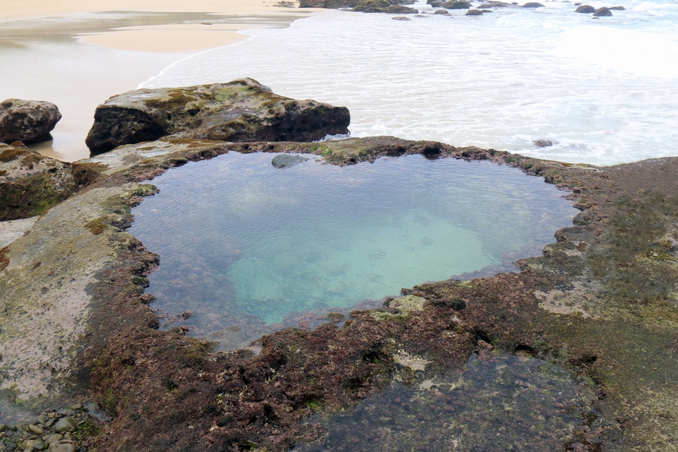
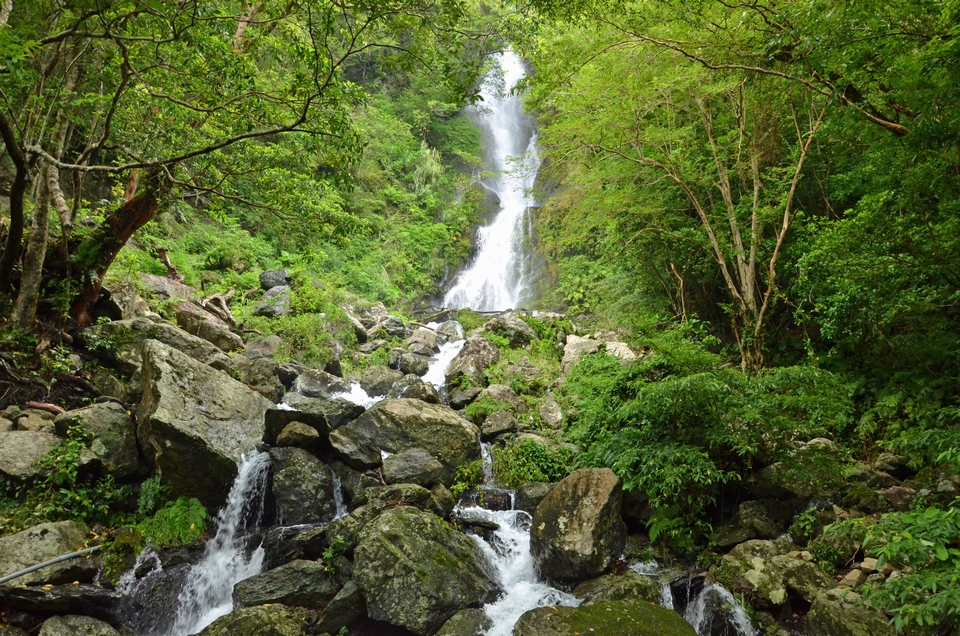
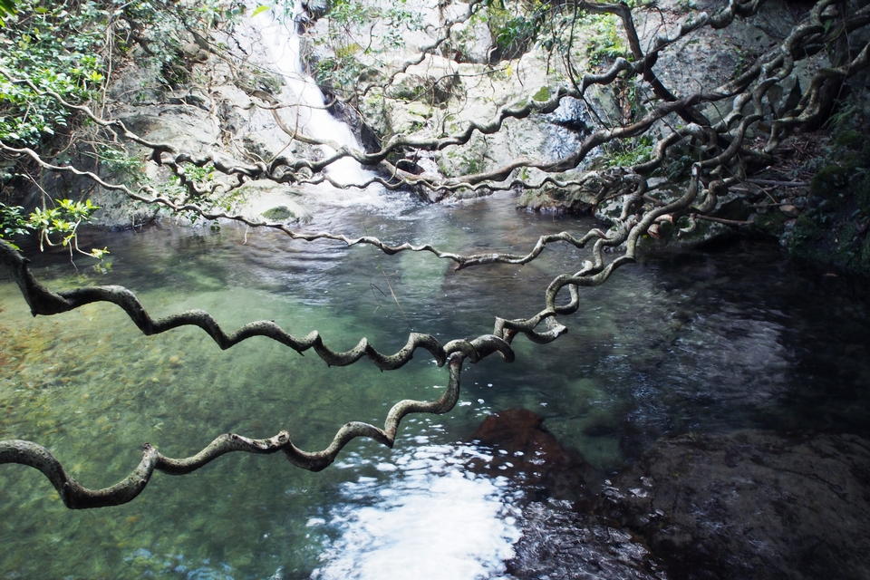

Префектура Кагосима · Амами-Осима · природа
Семь пейзажей Амами-Осимы: пляжи, мысы и водопад, которые любит островная певица

Амами-Осима лежит далеко на юге префектуры Кагосима, между Кюсю и Окинавой. Певица, выросшая на острове, рассказала, куда ехать за лучшими видами и почему остров красивее всего под дождём.
Остров
Красота, которую видно под дождём
В 2018 году на NHK вышел исторический сериал «Сэгодон» о Такамори Сайго (1828–1877), одном из героев реставрации Мэйдзи, которого в молодости сослали на Амами-Осиму. Заглавную песню к нему исполнила певица родом с Амами. Она поёт островные песни симаута, которым с детства училась у деда, и играет на амамийской арфе, инструменте, на котором сегодня играют считаные музыканты. В сериале она к тому же снялась как актриса.
«Я люблю сам воздух Амами, который чувствуешь, едва сойдёшь с самолёта. Влажность и запах моря сразу наполняют тело, и ты будто соединяешься с природой»
певица родом с Амами
Когда её спросили, чем остров красив, ответ оказался неожиданным.
«Красоту Амами часто находишь как раз под дождём и во влажности. Когда вдруг начинается ливень и всё вокруг намокает, море и растения становятся яркими, даже если солнца не видно. В тёмном, немного холодном свете природа проявляется сильнее всего. В красоте Амами есть что-то загадочное»
певица родом с Амами
О красоте острова поют и старинные народные песни. В одной из них, «Куро курудандо-буси», с почтением упоминаются виды на море с мыса Аямару и перевала Нагакумо. Певица советует съездить в места, о которых поётся в песнях.
1
Пляж Томори

«Сюда я часто приезжала, когда жила на Амами. Это место из моих воспоминаний и до сих пор один из любимых пляжей»
певица родом с Амами
Томори находится совсем недалеко от аэропорта Амами. Море здесь мелкое на большом расстоянии от берега и поразительно прозрачное.
2
Пляж Сакибару
Тихий пляж на берегу бухты Касари, о котором знают немногие. Дорога проходит через деревню Кисэ, и вскоре после неё внизу открывается берег, сияющий изумрудной зеленью.

«Думаю, по красоте с этим местом ничто не сравнится!»
певица родом с Амами
3
Мыс Аямару
Пологие холмы вокруг мыса напоминают узорчатый мяч темари, сплетённый из нитей, отсюда и название «Аямару». Со смотровой площадки на холме справа виден пляж Томори, а слева мыс Касари.

4
Пляж Бира
Бира известен хорошей высокой волной и считается одним из мест для серфинга. В роще у пляжа растут колоказия и пандан, тропические растения с большими листьями.

5
Мыс Мияко
Отсюда открывается вид на Восточно-Китайское море во всю ширь, и именно этот мыс снимали для заставки «Сэгодон». Местные зовут его ещё «Сасанто», что значит «бамбуковая башня».
6
Водопад Фунангё
Название пишут знаками «лодка» и «ходить»: так называли место, где рубили лес для постройки лодок. Водопад находится в центральной части Амами-Осимы, и на полноприводной машине к нему можно подъехать довольно близко. Вода падает мощно и с шумом.

7
Заросли модамы
В сериале этого места нет, но певица его очень любит. Модама это огромная лиана, и её заросли растут недалеко от водопада Фунангё.

Погода на Амами меняется быстро, но дождь здесь обычно ненадолго, и когда он заканчивается, над островом часто стоит радуга. Если промокнешь, южное солнце высушит одежду за минуты. Этот влажный и сильный воздух тропиков стоит почувствовать самому.
Фото: Ацуси Ямахира.